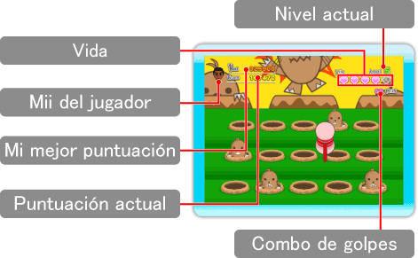

Pantalla de juego

Niveles
Irás avanzando por diversos niveles según vayas golpeando topos. Cada nivel es más difícil que el anterior, y aparecerán topos en más agujeros y mucho más rápido que antes.
Fin de la partida
Perderás una vida cada vez que no golpees un topo. Si te quedas sin vidas, la partida terminará.
Cómo conseguir puntos
Cuanto antes golpees a los topos según salgan, más puntos conseguirás.
Combo de golpes
Puedes conseguir un combo si golpeas una serie de topos sin fallar una sola vez. De este modo conseguirás puntos adicionales. Cuantos más golpes acumules en el combo, más puntos adicionales conseguirás.
Topos dorados
Si golpeas a los topos lo suficientemente rápido, quizás aparezcan un grupo de topos dorados. Golpéalos a todos para conseguir puntos adicionales.
Clasificación de Conexión Wi-Fi de Nintendo
Cuando superes tu mejor puntuación, podrás enviarla a la Clasificación de Conexión Wi-Fi de Nintendo.